融合工具+社区+电商属性的美食食谱平台 · PRD驱动的产品设计实践
「美食汇」是一款面向年轻群体的美食食谱应用，定位为"家庭美食入口"，融合工具（菜谱查询）、社区（UGC分享）与电商（食材购买）三大属性。项目从需求分析到PRD输出，完整经历产品从0到1的设计流程。
通过用户调研和场景分析，发现三个核心痛点：
• 外卖焦虑：预制菜、价格、卫生问题促使年轻人回归厨房，但缺乏系统的烹饪学习路径
• 信息碎片化：现有菜谱App多为纯工具属性，缺少社交激励和购物闭环
• 创作门槛高：用户想分享自制美食，但缺乏低成本的UGC发布和积分激励机制
采用"4+12"模块化架构：4个一级Tab承载核心场景，12个功能模块覆盖完整用户旅程。
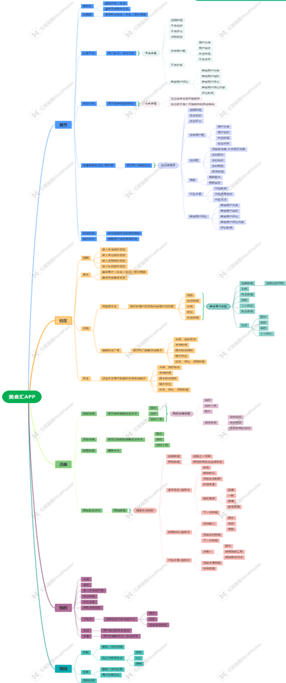
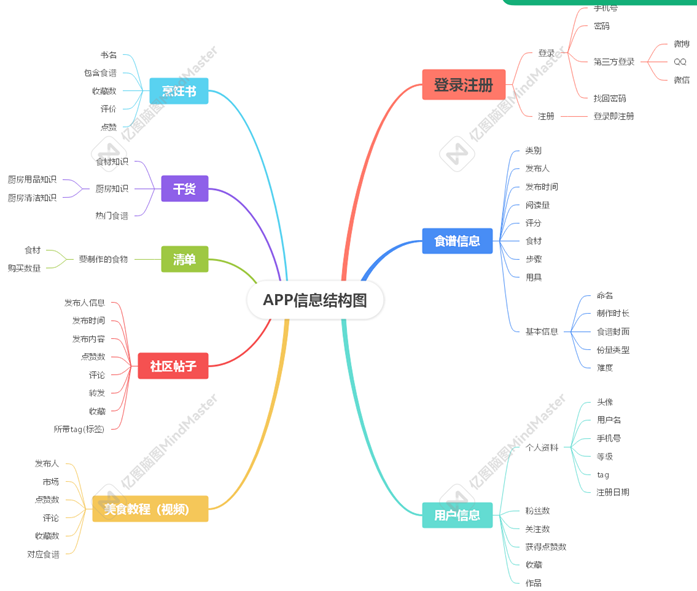
设计三层推荐策略，解决新用户冷启动和老用户个性化问题：
引入对数函数防止浏览量过大导致热度值失真，时间衰减因子保证内容时效性
基于用户相似度（兴趣标签、互动行为）推荐"和你口味相似的人喜欢的内容"，结合热度算法实现个性化+热门双重保障。
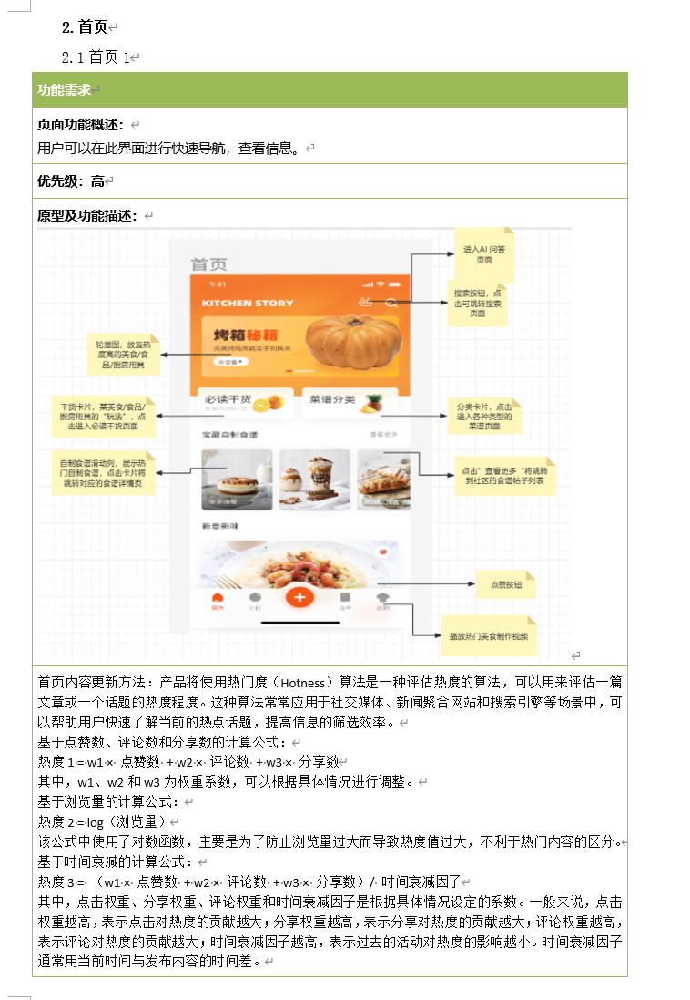
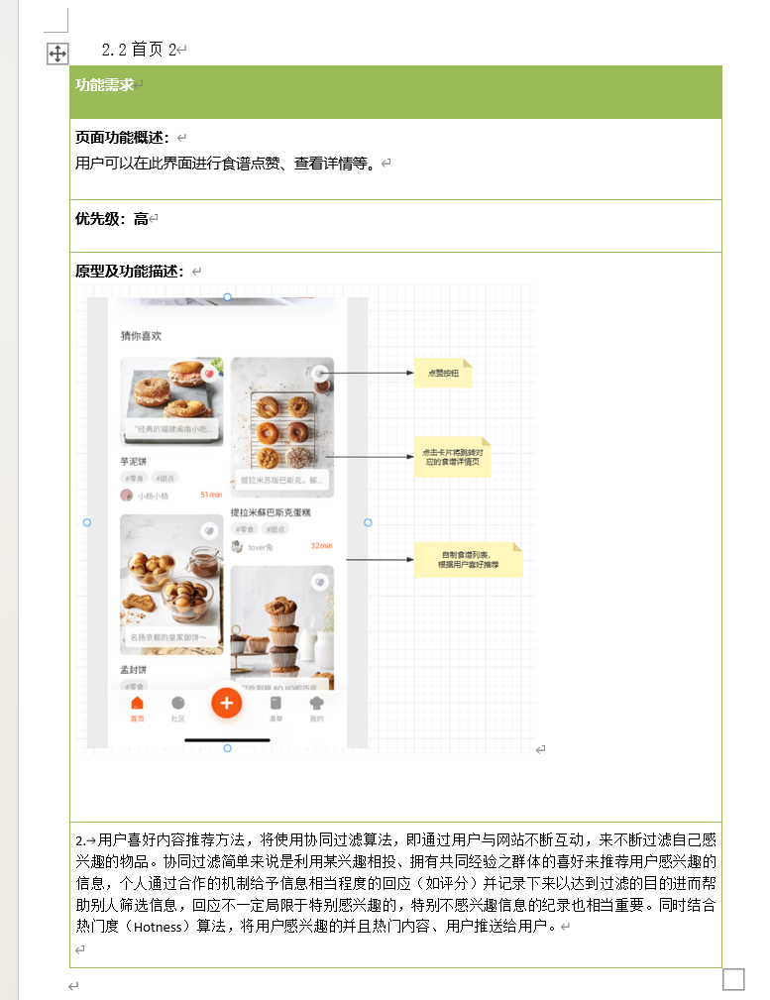
设计"创作-积分-会员"闭环激励：
• 发布食谱 → 获得2积分
• 积分累计达1000 → 兑换1日会员体验
• 会员解锁AI菜谱咨询（食材替换、用量调节）
• 年费会员赠送1个月，提升LTV
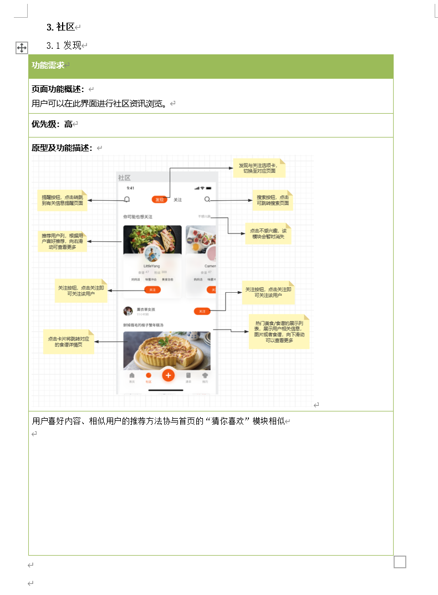
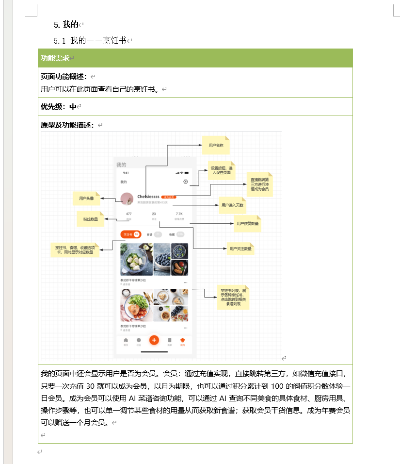
设计"食谱→食材清单→购物"的完整链路：
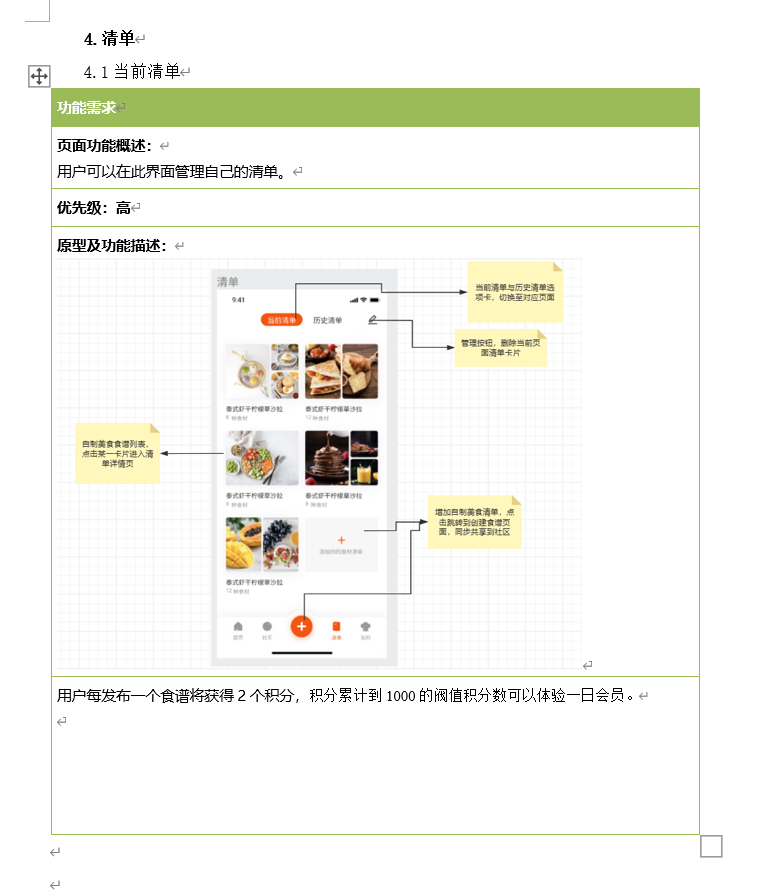
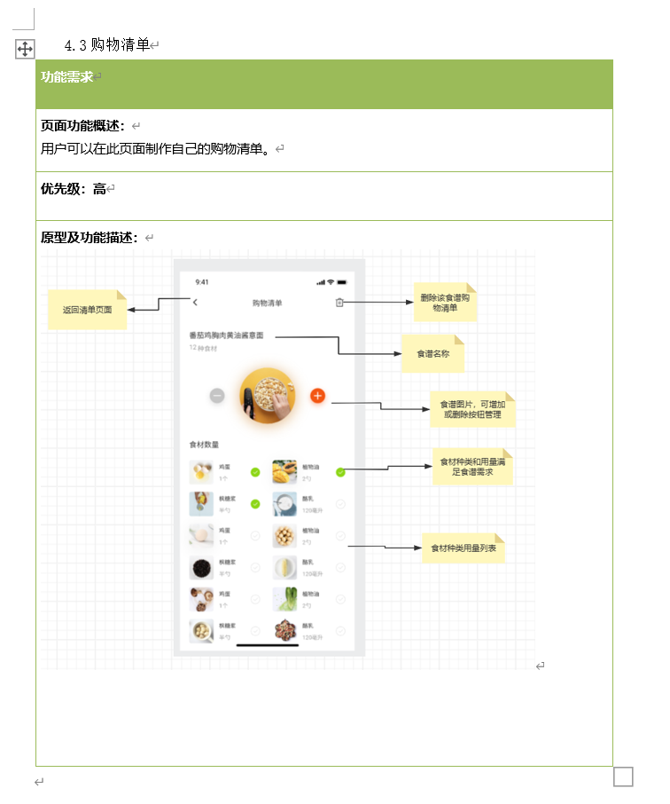
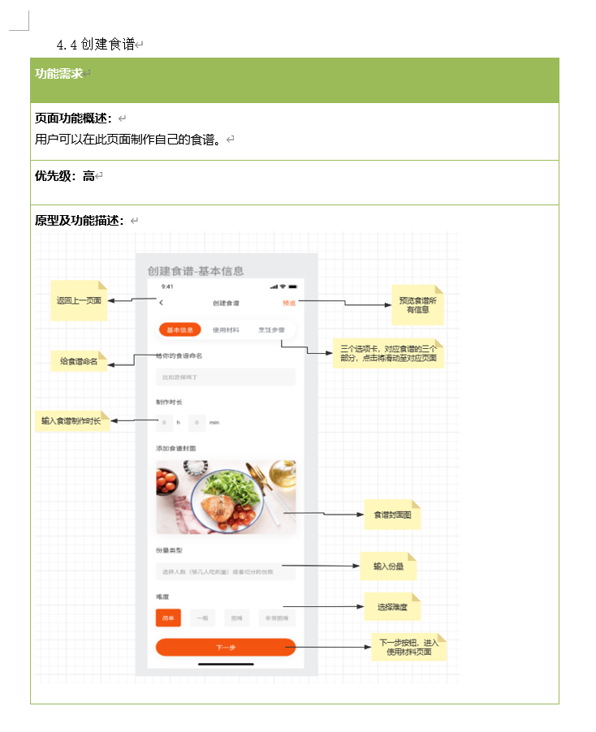
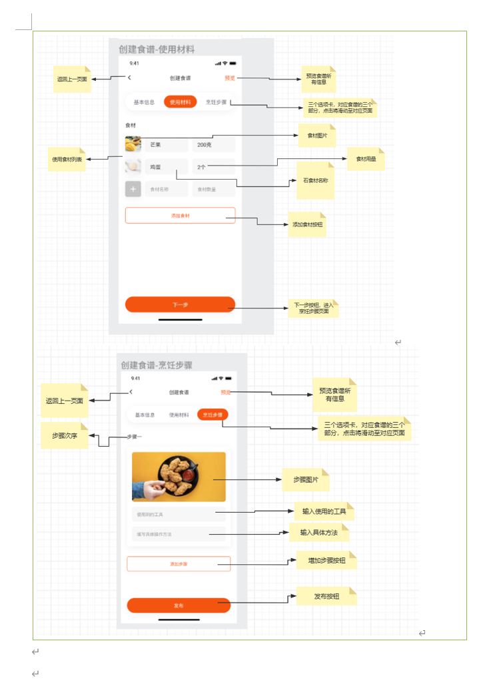
绘制6大核心流程图，覆盖用户从进入到转化的完整旅程：
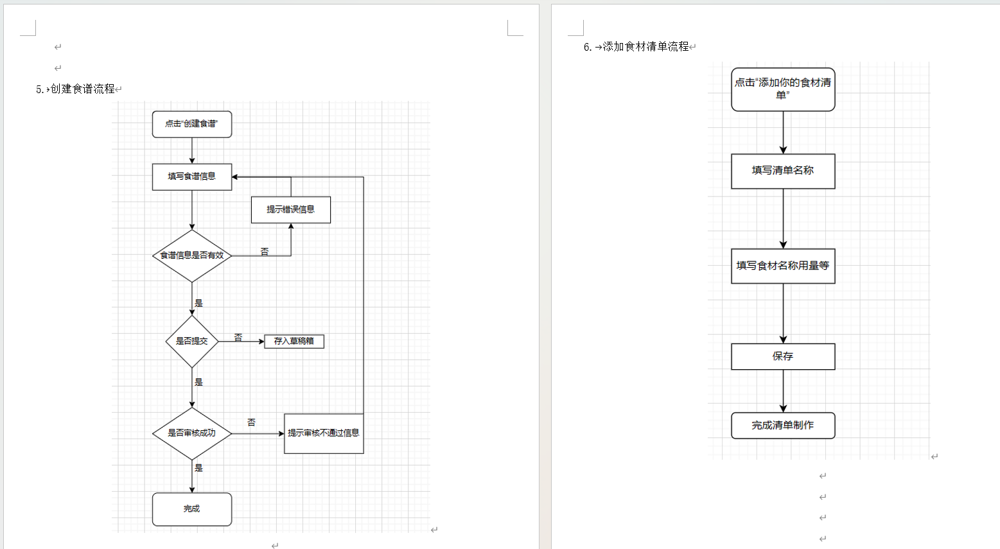
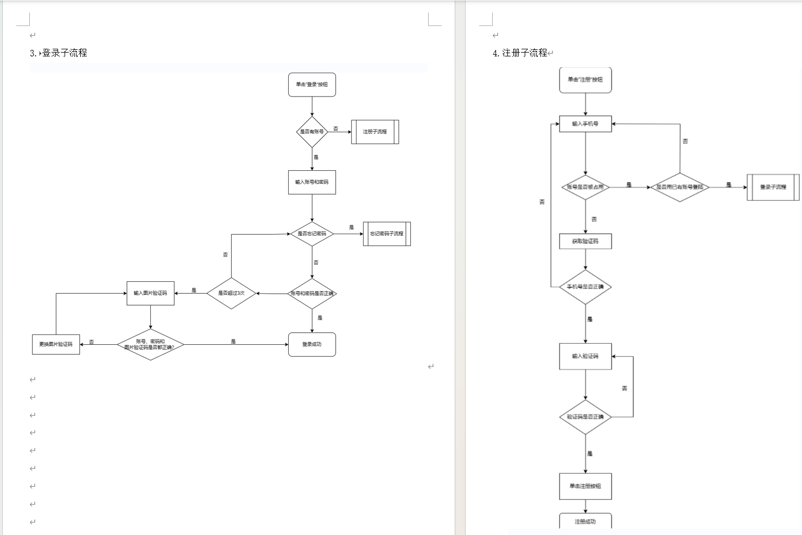
关键迭代决策：
• 商业化验证：V1.0.2新增会员充值（30元/月）和AI菜谱咨询，验证用户付费意愿
• 内容生态：增加积分激励和合伙人认证机制，解决UGC冷启动问题
• 推荐优化：从纯热门排序升级为"协同过滤+热度"双引擎，提升内容分发效率
作为产品经理，在PRD中明确技术约束和实现方案，降低与开发团队的沟通成本：
• 安全需求：用户个人信息接口层加密传输，全站HTTPS
• 性能需求：启动到首页≤5秒，单页加载≤3秒，超时提示+重载机制
• 适配策略：iOS遵循人机交互规范，Android遵循MaterialDesign，支持主流机型
• 缓存机制：信息加载完成后支持离线浏览，提升弱网体验